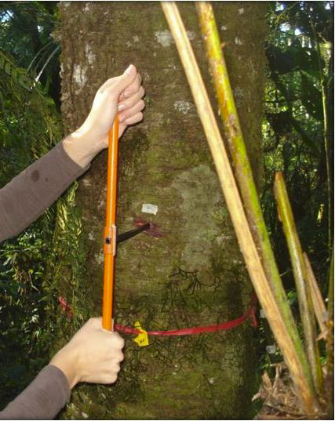
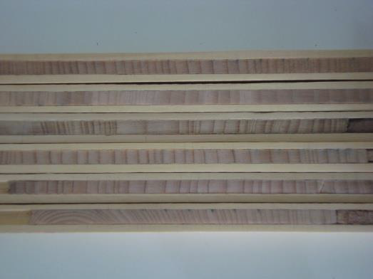
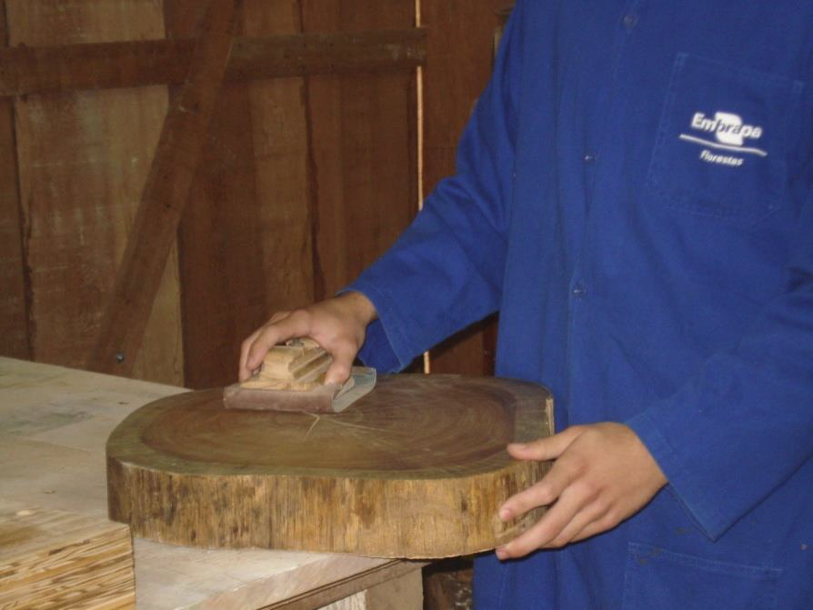
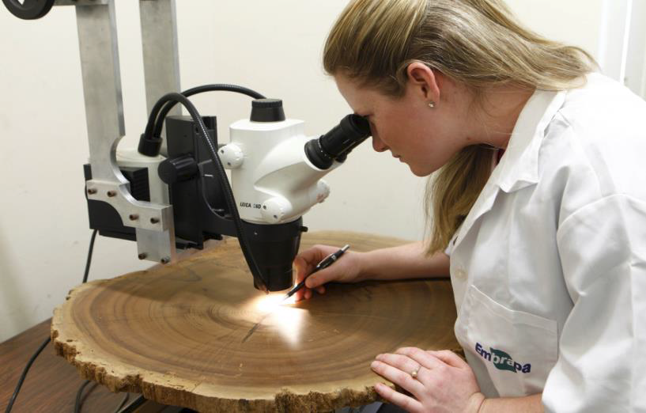
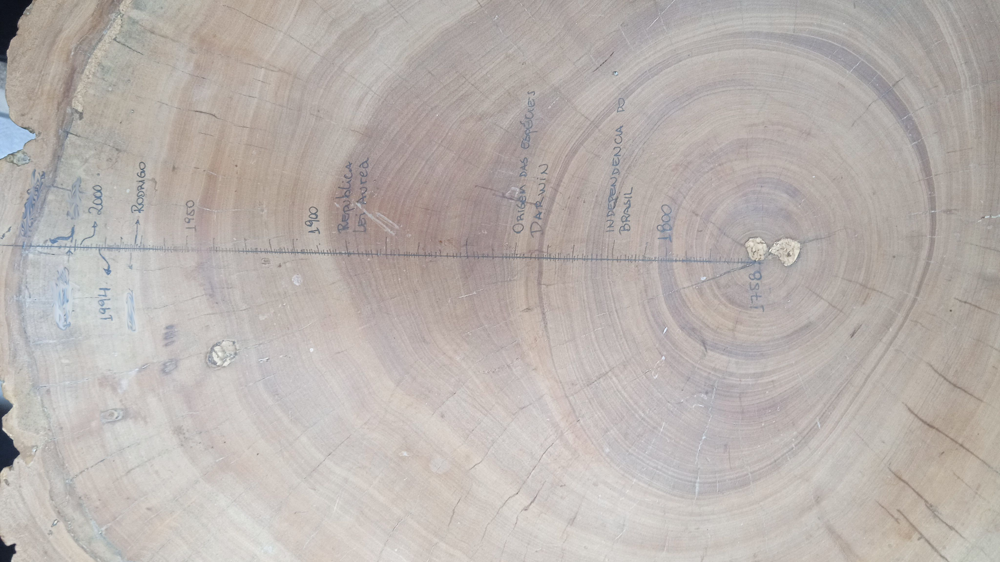

Morfologia vegetal
Morfologia Vegetal para Biologia - PUCPR
Morfologia Vegetal é uma disciplina teórico-prática do 1º período dos Cursos de Ciências Biológicas. Nela os estudantes integram conhecimentos referentes à estrutura e funcionamento básico das células, tecidos e órgãos vegetais relacionando-os ao ambiente e aos aspectos evolutivos das plantas. Ao final, são capazes de reconhecer as células e tecidos, sua função e importâncias ecológica.
Atividades - Trabalhos
1 Modelo de Célula Vegetal

o trabalho consiste na confecção modelo de uma célula vegetal em material a escolha do aluno.
A célula deve conter, no mínimo, as seguintes estruturas, em escalas próximas ao real (não é necessário representar o citoplasma)
- Parede celular
- plasmodesmos
- membrana plasmática
- núcleo
- cloroplastos
- tilacóides
- amiloplastos
- vacúolo
- mitocôndrias
- retículos endoplasmáticos liso
- retículos endoplasmáticos rugoso
- ribossomos
- microcorpos
- golgi
- citoesqueletomodelos confeccionados em materiais reciclados/alternativo/não poluentes recebem 0,5 pto extra

2 Dedrocronologia
Dendrocronologia é a ciência que usa os anéis de crescimento para analisar padrões ecológicos, como influencia do ambiente (solo, hidrologia, geologia, etc) e estudar o clima presente e reconstruir o clima do passado.
Leiam o seguinte texto
Para o trabalho vocês vão utilizar uma bolacha (disco) de um tronco de árvore
Embora vocês estejam trabalhando com um disco, é mais comum o uso de amostras não destrutivas retiradas com um trado de incremento (Sonda Pressler)

Este ai de cima é um trado dendrológico desmontado
Este aqui de baixo é um trado em ação

Com ele é possível se retirar uma pequena amostra do caule para a contagem dos aneis


Veja como se faz:
https://youtu.be/Dj09nnzYgpE? Links to an external site.
Se tiver curiosidade veja também este link:
https://youtu.be/AsbKcTOcZ7Q? Links to an external site.
O primeiro passo é lixar o disco

Começando com lixas mais grosas (80). Se a madeira está muito irregular, pode-se começar até com lixa 60.
Aos poucos passa-se para lixas mais finas (120 - 180 - 240 - 320 - 400) podendo chegar até em 600 em madeiras mais duras
Quando a madeira estiver pronta, trace com um lápis, pelo menos duas linhas que saiam da medula e sigam perpendiculares até a casca. Nessa linha serão contados os anéis. Ao final, se quiserem podem passar a caneta. Isso funciona bem se utilizarem uma de ponta muito fina (0,1 ou 0,3) tipo nanquim.
Escreva também seu nome e o ano em uma parte que não atrapalhe a contagem. Este material ficará em exposição no Lab
Os anéis podem ser contados com uma lupa desde de que caiba o disco nela!


Mas vocês podem contar em casa utilizando a câmera do celular apoiado em um suporte qualquer
Se você sabe o ano em que árvore foi coletada, pode traçar a história pretérita da árvore
Esta aqui é a minha mesa de churrasco, eu cheguei até a lixa 600 e contei os anéis em casa com meu celular.

Esta peroba foi cortada durante a construção da represa de Mauá da Serra em Jaguariaiva em 2012 e nasceu, possivelmente um pouquinho antes de 1758 (eu contei aneis até ai), junto com o Mozart.
OQUE DEVE SER ENTREGUE
O Disco propriamente lixado com:
aneis de crescimento marcados
final do cerne (se está diferenciado)
marcas de fogo ou outras lesões
marcas de ramiicações ou galhos
marcas de insetos ou outras pragas
Um documento (PDF) com o seguinte
Nomes da dupla
Nome da espécie analisada
Região, Estado e municípo da coleta
Três fotos (ao menos)
Disco antes de ser lixado
Disco finalizado com as marcações
Detalhe do disco mostrando lenho inicial e tardio, vasos e fibras/traqueídeos
Informações sobre o disco
Qual o diâmetro da bolacha (disco)?
Quantos anéis foram registrados em cada linha? Houve diferença entre as linhas? Explique.
Existem marcas/lesões na madeira? O que você acha que é? (Fogo, batida, predação, insto (broca), etc.)
Há diferença entre cerne e alburno?
Responda:
Há diferença entre o crescimento nos anos iniciais e finais? Explique
Em algum(uns) ano(s) foram registrados crescimentos menores ou maiores que a média? Justifique